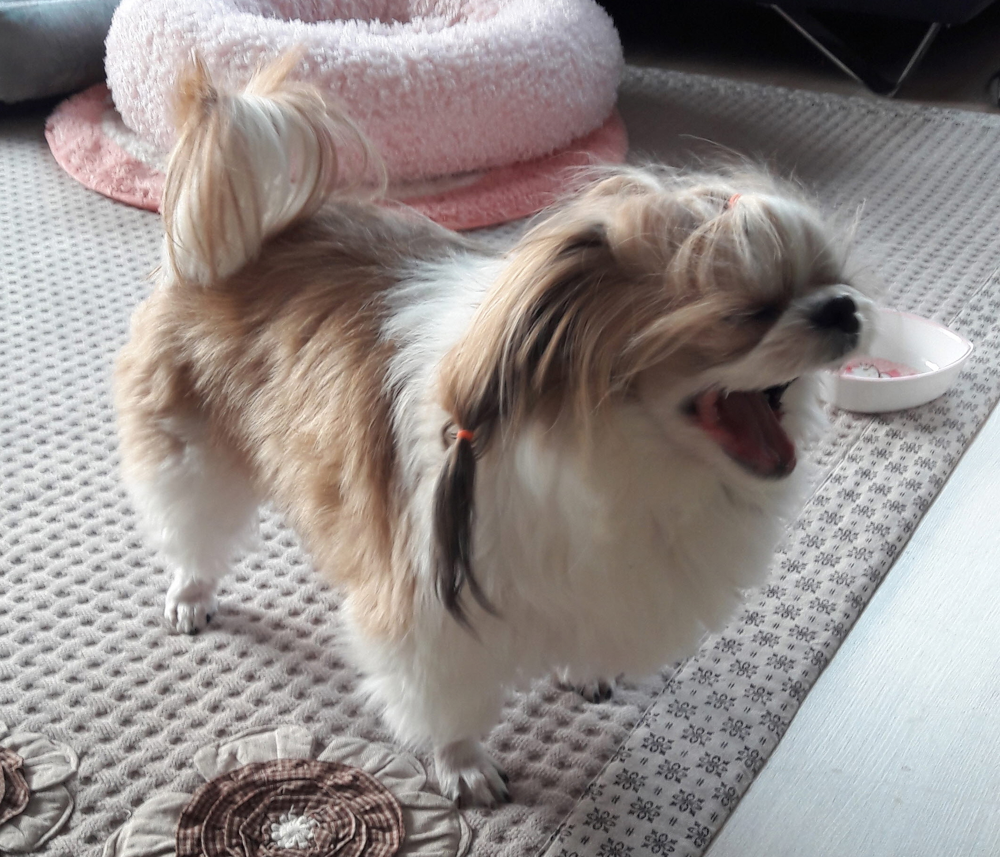
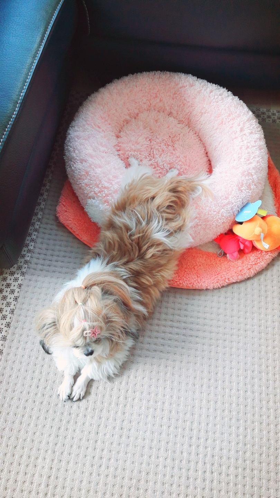
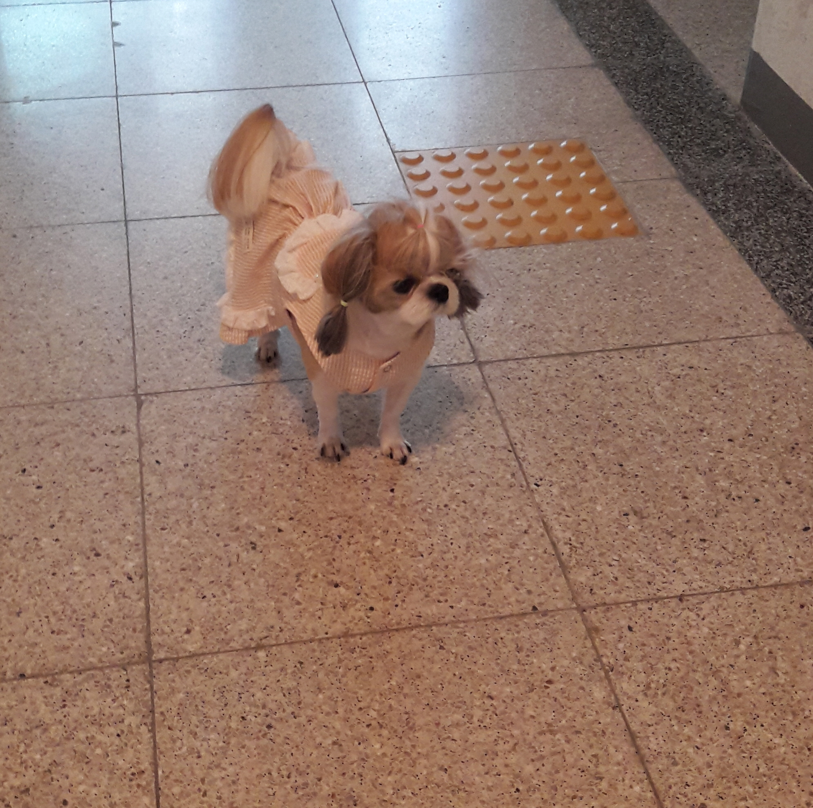
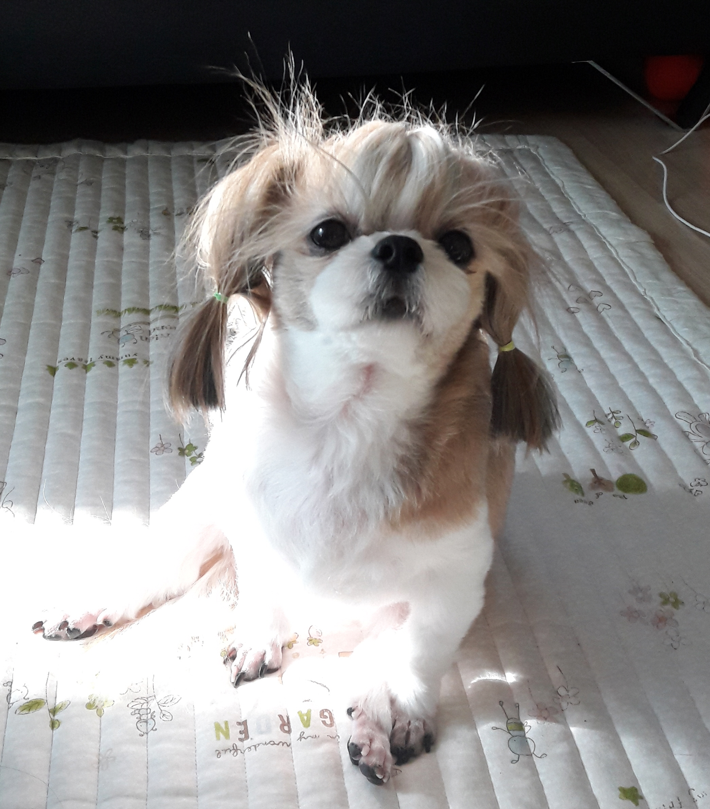

귀여운 우리집 해피
- 소 개

- - 이 름 : (오)해피
- - 견 종 : 시츄
- - 나 이 : 9살
- - 생 일 : 11월 20일
- - 좋아하는 거 : 잠자기, 간식, 킁킁이
- - 특 징 : 큰 소리가 나면 무서워하는 쫄보지만 만만해보이면 짖는다
- 좋아하는 간식
껌
치석제거도 되는 껌 한번 먹기 시작하면 다 먹을때까지 안 움직인다
- 즐거운 놀이
산책
1주일에 1~2회 40분이상 한다
킁킁이(노즈워크)
1~2일에 한번씩 한다
엄청 열심히 간식을 찾는다
- 해피의 옷장
겨울옷
여름옷
봄, 가을옷
- 해피의 일상
- 사진모음집


